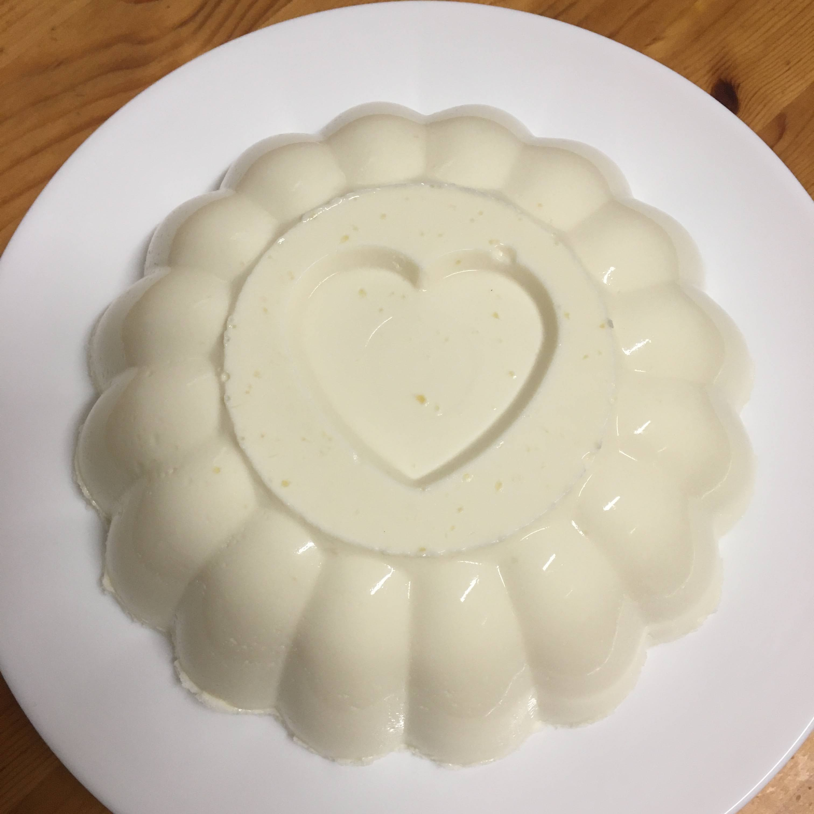

Pudim de iogurte

Ingredientes
- 120 ml de água (1/2 xícara de chá)
- 18 g de gelatina em pó sem sabor incolor (1 1/2 colher de sopa)
- 375 g de iogurte natural (1 1/2 xícara de chá)
- 400 g de creme de leite (2 caixinhas)
- 395 g de leite condensado (1 lata)
Modo de preparo
- Misturar a gelatina com a água e deixar hidratar por 1 minuto. Levar ao microondas por 20 a 30 segundos, até dissolver bem (ou em banho maria) e reservar;
- No liquidificador, bater o iogurte, o creme de leite e o leite condensado e a gelatina já preparada;
- Despejar em uma fôrma untada com um pouco de óleo e levar para gelar por no mínimo 4 horas. Desenformar e servir.